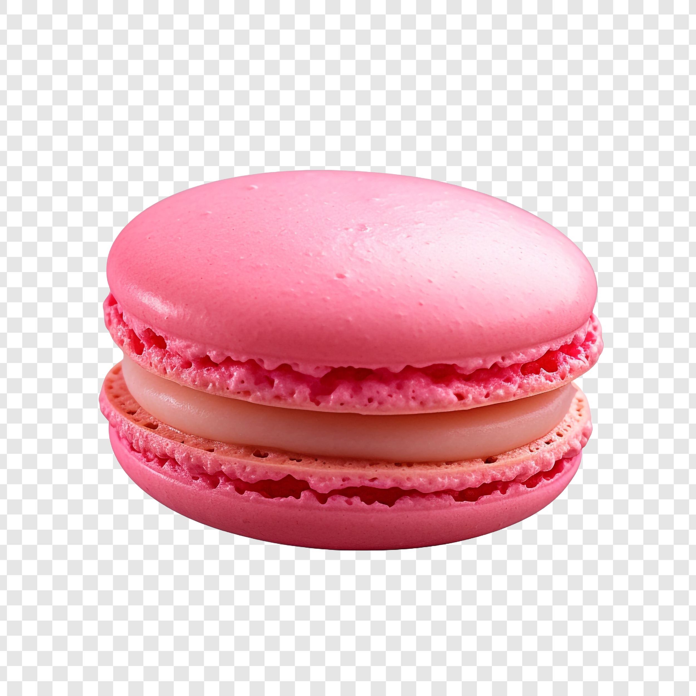

Gallery
Research and Travel Photography

Analysis of spectral line data in radio astronomy.
Experimental setup for atmospheric modeling.
Fieldwork observations from a remote observatory.
 Experimental setup for atmospheric modeling.
Fieldwork observations from a remote observatory.
Experimental setup for atmospheric modeling.
Fieldwork observations from a remote observatory.